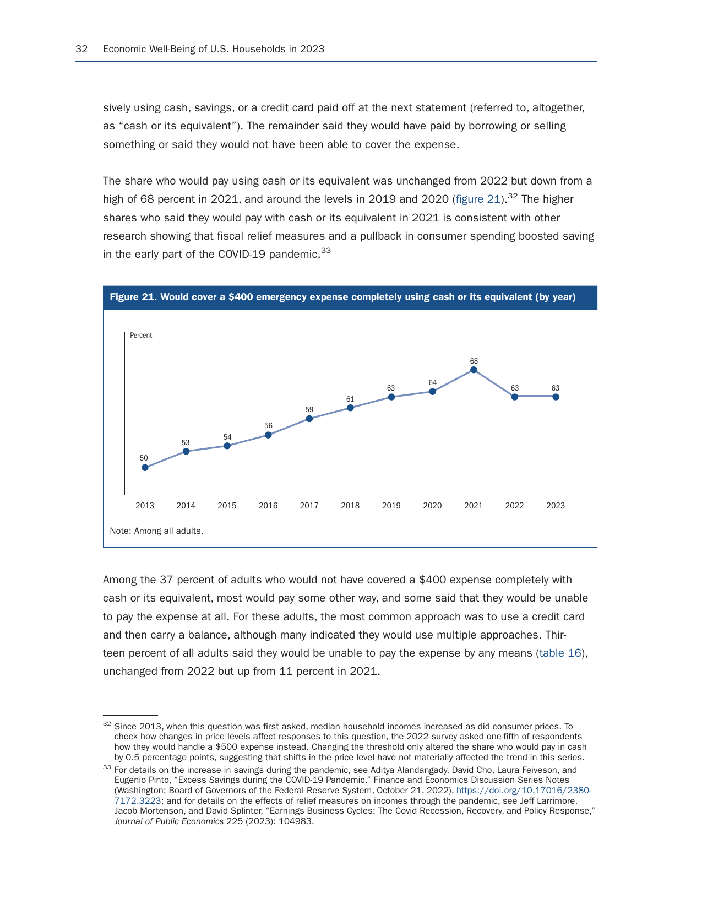
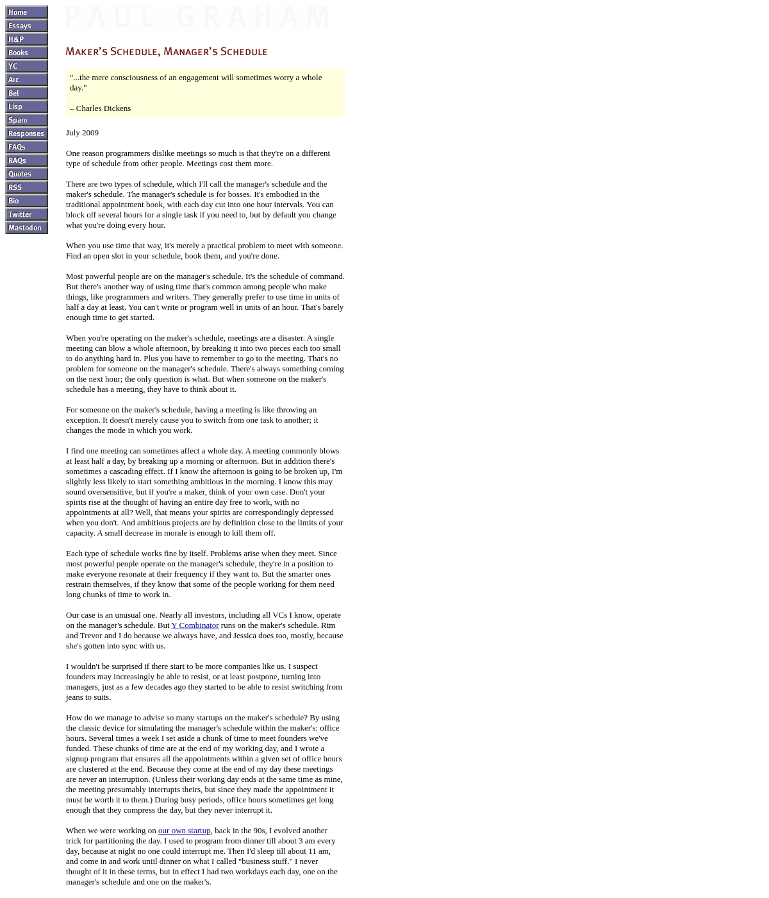
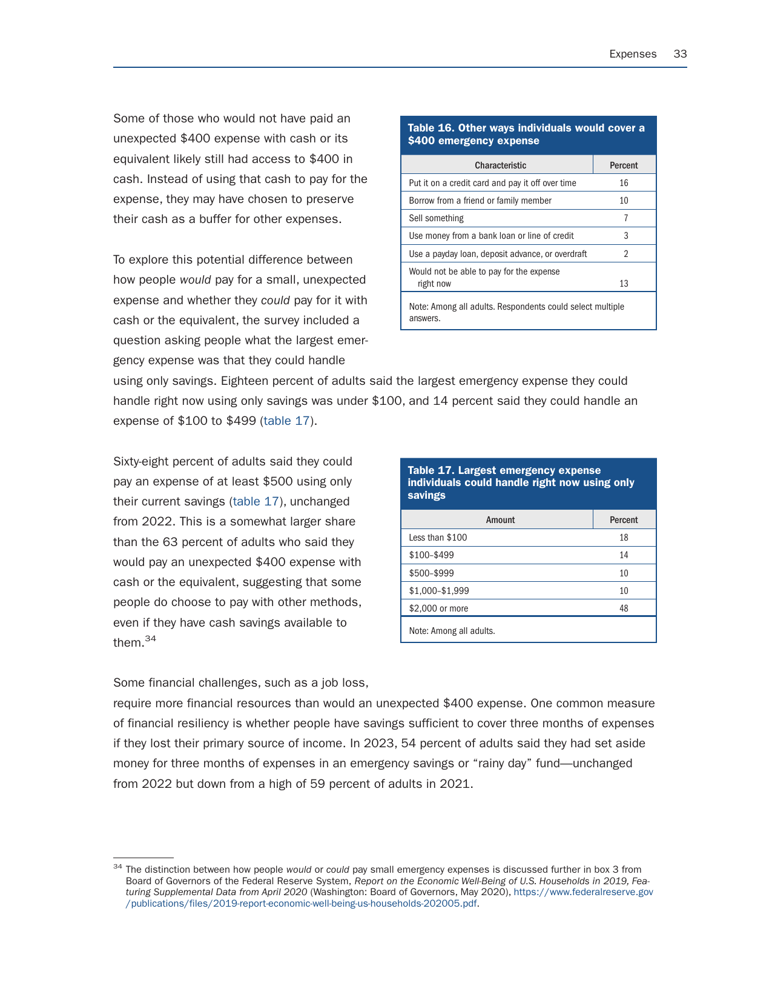

The 30-Minute Sunday Money & Time Audit (Privacy-Safe AI)
Thirty-seven percent of U.S. adults cannot cover a $400 emergency with cash alone, according to the Federal Reserve SHED survey. Here is a calm 30-minute Sunday routine that uses local CSV files and AI to stop spending leaks, protect deep work blocks, and automate payday transfers without sharing bank passwords.
Why Money and Hours Leak Between Paychecks
According to the Federal Reserve's Survey of Household Economics and Decisionmaking, thirty-seven percent of American adults could not cover an unexpected four-hundred-dollar expense using cash or its equivalent alone. In 1967, management writer Peter Drucker noticed the exact same blind spot with time: when executives guessed how they spent their week, their memory was wrong every single time. Most people lose both money and focus in tiny unrecorded leaks. You can fix both in thirty minutes every Sunday afternoon.

- Federal Reserve survey: 37% would borrow, sell, or come up short
- Peter Drucker (1967): memory always lies about where time goes
Source: Federal Reserve SHED Report (Fig. 21); Peter Drucker, The Effective Executive (1967)
Why Spreadsheets Quit and Bank Bots Risk Data
Traditional budgeting fails for a simple reason: logging every four-dollar coffee by hand drains willpower, so most people quit inside three weeks. Yet the modern shortcut of handing live bank usernames and passwords to unverified third-party apps creates an unnecessary security exposure. A safer alternative uses the plain CSV statement your bank already lets you download, with zero live account connection.
Source: Privacy-First Personal Finance Workflow
The 3-Bucket AI Statement Sort
Spend the first ten minutes on cash clarity. Open your recent card CSV, delete the column with your name or card digits, and paste only dates, merchant names, and dollar amounts into your AI workspace. Ask it to group every line into three buckets: essential fixed bills, purchases you genuinely valued, and forgotten recurring charges or price creeps. Cancel one unused renewal on the spot.
- Delete name and account columns from your CSV in 30 seconds
- Ask AI to flag duplicate renewals, fee hikes, and unused trials
Source: 10-Minute Anonymized Statement Audit
Paul Graham's Maker vs Manager Calendar Audit
Spend minutes ten through twenty on your calendar. In his 2009 essay Maker's Schedule, Manager's Schedule, programmer Paul Graham explained how a single thirty-minute meeting in the middle of an afternoon breaks four open hours into two fragments too short for serious creation. Look at the coming week right now, cluster routine errands onto one afternoon, and lock two uninterrupted ninety-minute blocks for skill or asset building.

- One mid-afternoon meeting splits 4 open hours into shallow halves
- Lock two uninterrupted 90-minute focus blocks before Monday starts
Source: Paul Graham, 'Maker's Schedule, Manager's Schedule' (July 2009)
Automate Payday Routing Before Willpower Fades
Use the final ten minutes to verify your upcoming automatic transfers. Author Ramit Sethi popularized a straightforward rule in I Will Teach You To Be Rich: decide your savings and investment percentages once, schedule those transfers for the day right after your paycheck lands, and spend the remaining checking balance without guilt. When money moves automatically on day one, impulse moods on Friday night cannot touch your future margin.

- Schedule automatic transfers for the day after payday
- Spend whatever remains guilt-free without daily tracking
Source: Federal Reserve SHED Table 16; Ramit Sethi, I Will Teach You To Be Rich (2019)
Twenty-Six Calm Hours Reshape an Entire Year
Thirty minutes every Sunday adds up to just twenty-six hours across an entire year. Yet those fifty-two small checkpoints catch silent fee increases early and guard over one hundred and fifty hours of focused creative work. Start this Sunday with one CSV export and two calendar blocks, and grab the free one-page Sunday Audit Checklist linked in the description.
Source: Mind & Margin Weekly Operating Cadence
- Federal Reserve Board: Economic Well-Being of U.S. Households (SHED) Report (May 2024): https://www.federalreserve.gov/publications/files/2023-report-economic-well-being-us-households-202405.pdf
- Paul Graham, 'Maker's Schedule, Manager's Schedule' (July 2009): https://paulgraham.com/makersschedule.html
- Mind & Margin 5-Hour Asset Builder OS & Recommended Reading (Drucker 1967; Sethi 2019): https://kenvh0010-lang.github.io/admin/bio/
Free 5-Hour Asset Builder OS and Sunday Audit Checklist. Check current edition availability directly on Amazon or explore Audible audiobook options.
Check Availability on Amazon Listen Free on AudibleTopics: weekly money review, personal finance system, ai budget workflow, time management, maker schedule, conscious spending, mind and margin